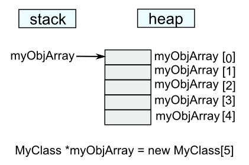
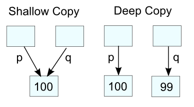

C++ Tutorial - Constructor - 2016
What implicit member functions are provided by C++?
To begin with, let's make the simplest class:
class Empty{};
Thanks to C++ compiler, actually it becomes something like this:
class Empty
{
public:
Empty(){} //default constructor
Empty(const Empty&){} //copy constructor
~Empty(){} //destructor
Empty& operator=(const Empty&){return *this;} //copy assignment operator
};
Isn't it convenient and amazing?
The member functions are called only when it's necessary.
Let's see when they are called.
Empty eA; //default constructor
~Empty(); //destructor
Empty eB(eA); //copy constructor (creating a new object)
eB = eA; //copy assignment operator (assign to an existing object)
Empty eC = eA; //copy constructor (creating a new object)
The following class has it's own constructor, copy constructor, copy assignment operator, and destructor. We can check what will be called in what circumstances:
#include <iostream>
using namespace std;
class A
{
public:
A(int n = 0) : m(n) {cout << "ctor\n";}
A(const A& a) : m(a.m){cout << "copy\n";}
A& operator=(const A& a) {
if(this != &a;) m = a.m;
cout << "assign =\n";
return *this;
}
~A(){cout << "dtor\n";}
private:
int m;
};
void foo(const A &a1;, const A &a2; = A()){}
int main()
{
A a(415); // ctor
A b = 7; // ctor
A c(a); // copy
A &d; = c;
A e = b; // copy
b = d; // assign =
A *p = new A(c); // copy
A *q = &a;
foo(911); // ctor, ctor
delete p; // dtor
return 0;
}
Output at the line return 0:
ctor ctor copy copy assign = copy ctor ctor dtor
One thing we need to discuss is the foo(911) call. The second parameter is obvious that the call A() in const A &a2; = A() will invoke constructor. The first parameter will also call constructor because the constructor converts the integer 911 to a temporary object of A, and use the value for initialization. This makes sense because a A object represents a single integer member m, thus we expect the class provides way to convert an integer to a A object.
A constructor is used to initialize an object after it has been allocated by the new. We can define multiple constructors with different arguments. The default constructor is defined as the constructor that can be called with no arguments:
class MyClass
{
int n;
public:
MyClass(); // default constructor declared
};
This could be a constructor with no argument or with arguments that all specify default values. Our C++ compiler will automatically generate a default constructor for us if we do not explicitly define one.
The default constructor is important because it is automatically invoked in the following circumstances, and it is an error if the class does not have a default constructor.
- When an object value is declared with no argument list, e.g. MyClass X; or allocated dynamically with no argument list, e.g. new MyClass; the default constructor is used to initialize the object.
- When an array of objects is declared, e.g. MyClass X[5]; or allocated dynamically, e.g. new MyClass [10]; the default constructor is used to initialize all the elements.

#include <iostream>
class MyClass
{
public:
MyClass() { std::cout << "default constructor" << std::endl; }
};
int main(int argc, char** argv)
{
MyClass* myObjArray = new MyClass[5];
}
With the following output:
default constructor default constructor default constructor default constructor default constructor
In the standard library, certain containers "fill in" values using the default constructor when the value is not given explicitly, e.g. vector<MyClass>(5); initializes the vector with 5 elements, which are filled with the default-constructed value of our type.
The compiler will implicitly define a default constructor if no constructors are explicitly defined for a class. This implicitly-declared default constructor is equivalent to a default constructor defined with a blank body:
class MyClass{};
If some constructors are defined, but they are all non-default, the compiler will NOT implicitly define a default constructor. Hence, a default constructor may not exist for a class. In the following example, because a constructor of type other than default is defined the compiler does not define a default constructor and hence we will get an error when we try to create objectB.
class MyClass
{
private:
int n;
public:
MyClass(int m); // A Constructor
};
MyClass :: MyClass(int m)
{
n = m;
}
int main()
{
MyClass objectA(5); // Constructor Called
MyClass objectB; // Error: no appropriate default constructor available
return 0;
}
Most of the class we write will have one or more constructors, a destructor and a copy assignment operator.
The process of creating objects in C++ is not a trivial task. Whenever an instance of a class is created the constructor method is called. The constructor has the same name as the class and it doesn't return any type.
Constructor is used to initialize an object after allocated by the new. We can write several constructors with different arguments. The default constructor is the constructor defined with no argument or with arguments with defaults values. If we do not explicitly define a constructor, the compiler will automatically generate a default constructor for us.
#include <iostream>
class MyString
{
public:
//constructor with no arguments
MyString():str_(NULL), size_(0) {}
//constructor with one argument
MyString(int sz):str_(NULL), size_(sz)
{
str_ = new char[sz];
}
//destructor
~MyString()
{
delete [] str_;
};
private:
char *str_;
int size_;
};
Following example looks a little bit complicated but after we briefly study what the C++ compiler does for us, we'll be back to this example again.
//stringbuilder.h
#include <iostream>
class StringBuilder
{
private:
static int counter;
char *str;
public:
StringBuilder();
StringBuilder(const char *);
~StringBuilder();
const char *getString();
};
//stringbuilder.cpp
#include <cstring>
#include "stringbuilder.h"
int StringBuilder::counter = 0;
StringBuilder::StringBuilder()
{
const char *defaultStr = "Default String";
int len = std::strlen(defaultStr);
str = new char[len + 1];
std::strcpy(str,"Default String");
counter++;
std::cout <<"Default Constructor counter=" << counter << std::endl;
}
StringBuilder::StringBuilder(const char *s)
{
int len = std::strlen(s);
str = new char[len + 1];
std::strcpy(str,s);
counter++;
std::cout <<"Constructor counter=" << counter << std::endl;
}
StringBuilder::~StringBuilder()
{
counter--;
std::cout <<"Destructor counter=" << counter << std::endl;
delete [] str;
}
const char* StringBuilder::getString()
{
return str;
}
//driver.cpp
#include <iostream>
#include "stringbuilder.h"
int main()
{
StringBuilder myStringA; //default constructor
StringBuilder myStringB("StringB"); //constructor taking const char *
StringBuilder *myStringC = new StringBuilder("StringC");
//StringBuilder myStringD = myStringC; //copy constructor
std::cout << "myStringA.str = " << myStringA.getString() << std::endl;
std::cout << "myStringB.str = " << myStringB.getString() << std::endl;
std::cout << "myStringC->str = " << myStringC->getString() << std::endl;
//std::cout << "myStringD.str = " << myStringD.getString() << std::endl;
delete myStringC;
return 0;
}
The output should look like this:
Default Constructor counter=1 Constructor counter=2 Constructor counter=3 myStringA.str = Default String myStringB.str = StringB myStringC->str = StringC Destructor counter=2 Destructor counter=1 Destructor counter=0
Constructor and destructor are each called 3 times as we expected.
Note that we have a pair of new[] and delete[] in the two constructors and in the destructor.
int len = std::strlen(defaultStr); str = new char[len + 1]; .... delete [] str;
We use new to allocate space to hold the string, and then we assign the address of the new memory to the str member. Here, the strlen() returns the length of a string not including the null. So we add one to the length.
Also note that the string is not stored in the object. The string is stored separately and the object just stores the address pointing where to locate the string.
The delete[] is necessary. When StringBuilder object expires, the str pointer expires. But the memory allocated with new[] to which str pointed remains allocated unless we use delete[] to free it. Deleting an object frees the memory for the object itself, but it does not free memory pointed to by pointers that were object members. Because of it, we should use the destructor. By placing the delete[] in the destructor, we ensure the memory that a constructor allocates with new[] is freed when the object goes away.
The compiler runs a constructor whenever an object of the type created:
StringBuilder myStringA;
StringBuilder myStringB("StringB");
StringBuilder *myStringC = new StringBuilder("StringC");
In the 2nd and 3rd cases, the constructor which takes a const char * are run to initialize the variable str. In the 3rd case, a new StringBuilder object is allocated dynamically. If everything goes well, all objects are initialized by running constructors. The first case, it is using default constructor.
C++ constructors have the following limitations:
- No return type
A constructor cannot return a result, which means that we cannot signal an error during object initialization. The only way of doing it is to throw an exception from a constructor. - Naming
A constructor should have the same name as the class, which means we cannot have two constructors that both take a single argument. - Compile time bound
At the time when we create an object, we must specify the name of a concrete class which is known at compile time. There is no way of dynamic binding constructors at run time. - There is no virtual constructor, see virtual constructor for more detail.
To circumvent the above limitations of constructor, we can use Design Patterns - Factory Method
A class needs a destructor if it acquires resources such as memory that we get from the free store using new, files, locks, thread handles, and sockets.
The destructor is called in response to a delete call in order to release any resources that the object is holding. There can be only one destructor for a class. If we do not specify a destructor, our C++ compiler will generate one automatically. The compiler will also generate code to automatically call the destructor for all of our member variables, in the reverse order they appear in the class declaration.
One sign that a class needs a destructor is simply that the class has members that are pointers or references. If a class has a pointer or a reference member, it often needs a destructor and copy operations. A class that needs a destructor almost always a copy constructor and a copy assignment. The reason is simply that if an object has acquired a resource, the default meaning of copy which is shallow copy or memberwise copy is almost certainly wrong.
A copy constructor is a special constructor that creates a new object from an existing object. In other words, a copy constructor is a constructor for a class/struct which is used to make a copy of an existing instance.
The following cases invoke copy constructor;
- When an object is create from another object during initialization (Class a = b)
- When an object is created from another object as a parameter to a constructor (Class a(b))
- When an object is passed by value as an argument to a function (function(Class a))
- When an object is return from a function (Class a; ... return a;)
- When an exception is thrown using this object type (Class a; ... throw a;)
The copy constructor should have one of the following forms:
- MyClass(const MyClass&);
- MyClass(MyClass& );
- MyClass(volatile MyClass&);
- MyClass(volatile const MyClass&);
The following constructors, however, are not copy constructors even though they could do the same thing as a copy constructor.
- MyClass(MyClass*);
- MyClass(const MyClass*);
The following is not a copy constructed and ill-formed:
- MyClass(MyClass)
We may not want to write a copy constructor if bit-wise copy works for the class. If we defined our own copy constructor, it probably because we needed a deep copy or some special resource management, in which case, we will need to release these resources at the end, which means we probably need to define a destructor and we may also want to think of overloading the assignment operator.
If we do not define a copy constructor, the compiler will generate one for us that performs a shallow copy (copies only a pointer so that the two pointers refer to the same object) of the existing object's member variables. In other words, the copy constructor that compiler provides does a member-wise copy of the source object. So, if copy constructor is not given for the following class:
class MyClass
{
int i;
char c;
string s;
};
what the compiler does for us is:
MyClass::MyClass(const MyClass& myClass):i(myClass.i), c(myClass.c), s(myClass.s){}
The copy constructor that our compiler provides is sufficient in many cases. However, there are cases where the member-wise copy constructor is not good enough. For example, if our object allocates any resources, we most likely need a copy constructor so that we can perform a deep copy (copies what a pointer points to so that the two pointers now refer to distinct objects).
// shallow copy int *p = new int(99); int *q = p; // copy the pointer p *p = 100; // change the value of the int pointerd to by p // deep copy int *p = new int(99); int *q = new int(*p); // allocate a new int before copying the value pointed to by p *p = 100; // change the value of the int pointed to by p
When our object contains raw pointer, then we need to do a deep copy of the pointer. In other words, we do not want to copy the pointer itself. Instead, we want to copy what the pointer points to. Why do we need to deep copy? That's because the instance owns the pointer, and the instance is responsible for calling delete on the pointer, probably via destructor. If our object does delete on the pointer to an object which has been deleted, it may cause heap corruption.

Here is another example of effects of copy constructor that compiler provides:
#include <iostream>
using namespace std;
class Foo
{
char *buf;
public:
Foo(char const *b = "default") {
cout << "Constructor Foo()\n";
buf = new char[std::strlen(b)+1];
std::strcpy(buf,b);
}
~Foo() {
cout << "Destructor ~Foo()\n";
delete[] buf;
}
};
Foo Func(Foo f) {
return f;
}
int main()
{
Foo f;
cout << "call Func()\n";
Func(f);
return 0;
}
If we run the code, specifically when the Func() is called, the program may crash or have unexpected result.
Why?
Let's look at the output from the run:
Constructor Foo() call Func() Destructor ~Foo() Destructor ~Foo()
We call destructor, which does delete[]. The problem is that it is trying to delete a pointer we haven't allocated. When default copy constructor is called (First when Func(Foo f) is called and then when it returns f), it does not allocate anything. If we add the following lines of code in the class, we can see the copy constructor is called.
Foo(const Foo &, char const *b = "default") {
cout << "Copy constructor\n";
}
The output:
Constructor Foo() call Func() Copy constructor Copy constructor Destructor ~Foo() ....crashSo, the undesirable behavior.
How to fix it?
We have two choices:
- Add copy constructor that does memory allocation.
By adding following line for copy constructor:Foo(const Foo &, char const *b = "default") { buf = new char[std::strlen(b)+1]; cout << "Copy constructor\n"; }Then, we get new output with matching constructor/destructor called:
Constructor Foo() call Func() Copy constructor Copy constructor Destructor ~Foo() Destructor ~Foo() Destructor ~Foo()This code is not desirable.
- Return reference to the object instead of object itself.
Foo& Func(Foo &f;) { return f; }And just one call for construtor and destructor.Constructor Foo() call Func() Destructor ~Foo()This should be our choice.
Summary
The copy constructor gets called in the following cases:
- An object is passed to a method by value or returned by value.
- An object is initialized using the syntax, MyClass a = b.
- An object is placed in a braced-enclosed initializer list.
- An object is thrown or caught in an exception.
The are cases when we do not want to create copies of an object. We can prevent it by doing:
- Declare a copy constructor and assignment operator. We don't have to provide implementation, and this prevent the compiler from generating its own default versions (see Class - copyable or not )
- Make the copy constructor and assignment operator private.
- Use boost and inherit from boost::noncopyable.
- We can disable the default constructor and assignment operator with C++0x.
Visit move constructor of C++11
.The assignment operator is used to assign the value of one object to another object, a=b. It differs from the copy constructor in that the object being assigned to already exists.
Some guidelines for implementing the assignment operator are:
- Use a const reference for the right-hand operand.
- Return *this as a reference to allow operator chaining.
- Destroy any existing state before setting the new state.
- Check for self-assignment (a = a) by comparing this to &rhs;.
Here is a sample code:
#include <string>
class Array
{
public:
Array(); // default constructor
explicit Array(int size); // non-default constructor
~Array(); // destructor
Array(const Array& input_array); // copy constructor
Array& operator=(const Array& input_array); // assignment operator
private:
int mSize;
std::string *mArray;
};
#include <iostream>
#include <algorithm>
// default constructor
Array::Array():mSize(0), mArray(NULL) {}
// non-default constructor
Array::Array(int size):mSize(size), mArray(new std::string[size]) {}
// destructor
Array::~Array()
{
delete[] mArray;
}
// copy constructor
Array::Array(const Array& input_array):
mSize(input_array.mSize),
mArray(new std::string[input_array.mSize])
{
std::copy(input_array.mArray, input_array.mArray + mSize, mArray);
}
// assignment operator
Array& Array::operator=(const Array& input_array)
{
if(this != &input;_array) // self assignment ?
{
delete[] mArray; // delete current array first
mSize = input_array.mSize;
mArray = new std::string[input_array.mSize];
std::copy(input_array.mArray, input_array.mArray + mSize, mArray);
}
return *this;
}
Here are the cases when the methods will be called:
Array a; // default constructor Array a(10); // non-default constructor Array b(a); // copy constructor Array c = a; // copy constructor because c does not exist yet. b = c; // assignment operator
The following code demonstrates the A c = a is calling copy constructor not the assignment operator because c does not exist yet:
#include <iostream>
using namespace std;
class A
{
int x;
public:
explicit A(int xx):x(xx){}
A(const A& a) { x = a.x; x++;}
A& operator=(const A& a) { x = a.x; x--; return *this;}
};
int main()
{
A a(4);
A c = a;
return 0;
}
So, the value of c.x is not 3 but 5 because it calls copy constructor. The copy constructor does x++.
Which constructor in the following code should we use?
(1) or (2)
class A
{
public:
A() {std::memset(buf,0,sizeof(buf));}
protected:
char buf[255];
};
class B
{
public:
B(const A& arg): a(arg) {} // (1)
B(const A& arg) { a = arg;} // (2)
protected:
A a;
};
int main()
{
A a;
B B(a);
return 0;
}
A constructor is similar to a function. It has a name, a parameter list, and a function body. As we can see in the example below, the meaning of an initializer is up to the constructor:
string s("my string"); // initialize s to the character string "my string"
vector<int> v(100); // make v a vector of 100 integers
The standard string's constructor uses a character string as an initial value, while the vector's constructor uses an integer as the initial number of elements.
However, unlike a function, a constructor may also have a constructor initializer list.
#include <iostream>
#include <string>
using namespace std;
class Student
{
public:
enum {Freshman = 1, Sophomore, Junior, Senior};
Student(){}
Student(const string &fn;, const string &ln;, int i, int y = Freshman)
:first_name(fn), last_name(ln), id(i), year(y)
{
cout << "Name: " << first_name << " " << last_name << endl;
cout << "id : " << id << endl;
cout << "year : " << year << endl;
}
private:
const string first_name;
const string last_name;
int id;
int year;
};
int main()
{
Student s1("John","Doe", 12345, Student::Junior);
return 0;
}
The constructor initializer starts with a colon. It is followed by a comma-separated list of data members each of which is followed by an initializer inside parentheses:
Student(const string &fn;, const string &ln;, int i, int y = Freshman) : first_name(fn), last_name(ln), id(i), year(y)
The constructor initializes the first_name to the value of its fn parameter, last_name to the value of its ln, and so on. As with any member function, constructors can be defined inside or outside of the class. The constructor initializer is specified only on the constructor definition, not its declaration.
One of the primary reasons constructor initializers are hard to understand is that it is usually legal to omit the initializer list and assign values to the data members inside the constructor body. So, we can re-write the code as following:
Student(const string &fn;, const string &ln;, int i, int y = Freshman) {
first_name = fn;
last_name = ln;
id = i;
year = y;
}
This constructor in the new code assigns the members of class Student. It does not explicitly initialize them. Whether there is an explicit initializer or not, the first_name and last_name members are initialized even before the constructor is executed. This constructor implicitly uses the default string constructor to initialize the first_name and last_name members. When the body of the constructor is executed, the first_name and last_name members already have values. Those values are overwritten by the assignment inside the constructor body.
Execution of constructor is done in two phases:
- The initialization phase
- Body execution phase which consists of all the statements within the body of constructor. Note that data members of class type are always initialized in the initialization phase, regardless of whether the member is initialized explicitly in the constructor initializer list. Initialization happens before any the statement execution of the constructor body.
The members that are not initialize by the explicit initializer of the constructor are initialized using the rules for initializing variables. In other words, data members of class type are initialized by running the type's default constructor. The initial value of members of built-in or compound type depend on the scope of the object: Members of local scope are uninitialized, and members of global scope are initialized to 0.
The end results of the two are the same. The difference is that the version that uses the constructor initializer initializes values to the data members. The version that does not define a constructor initializer assigns values to the data members in the body of the constructor. How significant is this distinction? It depends on the type of the data member.
If an initializer is not provided for a class member, then the compiler implicitly uses the default constructor for the member's type. However, if that class does not have a default constructor, then the attempt by the compiler to use it will fail. In such cases, an initializer must be provided in order to initialize the data member.
Some members must be initialized in the constructor initializer. For such members, assigning to them in the constructor body doesn't work. In other words, members of a class type that do not have a default constructor and members that are const or reference types must be initialized in the constructor initializer.
Let's run the following example:
#include <iostream>
#include <string>
using namespace std;
class Student
{
public:
Student(int id)
{
studentId = id;
ss = id;
rStudentId = studentId;
}
private:
int studentId;
const int ss;
int &rStudentId;
};
int main()
{
Student s1(12345);
return 0;
}
Then, we'll get the errors like this:
'Student::ss' : must be initialized in constructor base/member initializer list 'Student::rStudentId' : must be initialized in constructor base/member initializer list l-value specifies const object
By the time the constructor body begins executing, initialization is complete. So, the only time we can initialize const or reference data members is to use the constructor initializer:
Student(int id) : studentId(id), ss(id), rStudentId(studentId) {}
For most of the cases, the difference between initialization and assignment is a matter of efficiency. In other words, a data member is initialized and assigned when it could have been initialized directly. The more important than the issue of efficiency is that some members of a class must be initialized.
Remember that we must use an initializer for any const or reference member.
Output is
Parent default constructor. Daughter default constructor. Overloaded Parent constructor. Overloaded Son constructor.
The default constructor has no arguments. But a class may have overloaded constructors. If we want to call an overloaded constructor of the base class when a new object of a derived class is created, we can create a matching overloaded constructor in the derived class. It has the same number and type of arguments.
As shown in the above example, the overloaded Son class constructor passes the integer argument to the overloaded base class constructor.
A method can be declared in a derived class to override a matching method in the base class if both have the same signature. This hides the base class method as it becomes inaccessible unless it is called explicitly, using the :: scope resolution operator.
In a derived class, if we include a method definition that has the same name and exactly the same number and types of parameters as a method already defined in the base class, this new definition replaces the old definition of the method.
A subclass inherits methods from a superclass. Sometimes, it is necessary for the subclass to modify the methods defined in the superclass. This is referred to as method overriding. The following example demonstrates method overriding.
#include <string>
#include <iostream>
using namespace std;
class Duck
{
public :
void speak() { cout << "Duck Quack" << endl ; }
void speak( string msg ) { cout << "....." << msg << endl ; }
} ;
class ToyDuck : public Duck
{
public :
void speak( string msg ) { cout << msg << endl ; }
} ;
int main()
{
Duck duck ;
ToyDuck toyduck ;
duck.speak() ;
duck.speak( "Another Duck Quack" ) ;
toyduck.speak( "Squeak" ) ;
toyduck.Duck::speak( "ToyDuck using Duck Quack" ) ;
return 0 ;
}
Output is
Duck Quack .....Another Duck Quack Squeak .....ToyDuck using Duck Quack
However, overriding base class methods must be used carefully to avoid unintentionally hiding overloaded methods. A single overriding method in a derived class will hide all overloaded methods of that name in the base clase!
The overriding method declared in the derived class hides both overrided methods in the base class. If we call toyduck.speak()
toyduck.speak();
the compiler will complain there is no matching method for that call.
ToyDuck::speak' : function does not take 0 arguments
Note
Overloading: two or more methods with the same name but different signatures in the same scope. These two methods may exist in the same class or anoter one in base class and another in derived class.
Constructor
- The base class object is constructed first. This means the base class object should be constructed first before the program enters the body of the child class constructor. We use the member initializer list to accomplish this. But if we omit calling a base class constructor, the program uses the default base class constructor. A child class constructor always calls a base class constructor.
- The child class should pass base class information via base class constructor.
- The child class constructor should initialize its member.
- A child class doesn't inherit the base class constructor.
Destructor
- If we create automatic storage class object, its destructor is called automatically called when the program exits.
- If the object is created by using new, it resides in heap memory (free store), its destructor is called automatically when we use delete to free the memory.
- If we create a static storage class object, its destructor is called automatically when the program exits.
- If we create temporary objects, the destructors for the objects are called when we finished using them.
- When we delete a child object, the destructor for the child is called and then the destructor for the base is called.
- A base class destructor should be virtual unless the class isn't to be used as a base class. That way, when we delete a child class via base class pointer (or reference) to the object, the program uses the child class destructor followed by the base class destructor rather than using only the base class destructor. More on Virtual Functions.
- A child class doesn't inherit the base class destructor.
- When a program deletes an object, it first calls the child class destructor and then the base class destructor.
#include <iostream>
using namespace std;
class Checking
{
public:
Checking(int bal = 0, int i = 100) {
cout << "Checking constructor" << endl;
balance = bal;
id = i;
}
~Checking() {
cout << "Checking destructor" << endl;
}
int getBalance() {
return balance;
}
int getId() {
return id;
}
private:
int balance;
int id;
};
class InterestChecking : public Checking
{
public:
InterestChecking(float r, int b, int i) : Checking(b, i) {
cout << "InterestChecking constructor A" << endl;
rate = r;
}
// copy constructor for the base class will be called
InterestChecking(float r, const Checking &chk;) : Checking(chk) {
cout << "InterestChecking constructor B" << endl;
rate = r;
}
// An alternative version
/*
IntersetChecking(const Checking &chk;, float r) : Checking(chk), rate(r) {
}
*/
~InterestChecking() {
cout << "InterestChecking destructor" << endl;
}
float getRate() {
return rate;
}
private:
float rate;
};
int main()
{
cout << "Normal Checking..." << endl;
Checking *c1 = new Checking(1000, 101);
delete c1;
cout << endl;
cout << "Interest Checking..." << endl;
InterestChecking *c2 = new InterestChecking(5.9, 5000, 102);
delete c2;
cout << endl;
cout << "Interest Checking using Checking pointer..." << endl;
Checking *c3;
c3 = new InterestChecking(8.9, 25000, 103);
delete c3;
return 0;
}
The output clearly shows that the base constructor is called first when we make a child object and the child destructor is called first when we delete a child object.
Normal Checking... Checking constructor Checking destructor Interest Checking... Checking constructor InterestChecking constructor A InterestChecking destructor Checking destructor Interest Checking using Checking pointer... Checking constructor InterestChecking constructor A Checking destructor
The last output, however, does not call the child class destructor. It only calls the base class constructor. That's because we're using a pointer to the base class.
If we had used virtual destructor,
virtual ~Checking() {
cout << "Checking destructor" << endl;
}
the child class destructor would have been called:
Normal Checking... Checking constructor Checking destructor Interest Checking... Checking constructor InterestChecking constructor A InterestChecking destructor Checking destructor Interest Checking using Checking pointer... Checking constructor InterestChecking constructor A InterestChecking destructor Checking destructor
More on Virtual Functions
Constructors and destructors are called implicitly by the compiler. The order of these function calls depends on the order in which execution enters and leaves the scopes where the objects are created. In general, destructor calls are in the reverse order of the corresponding constructor calls. As we see from the following example, the storage classes of objects can alter the order of destructor calls.
In this example shows the order in which constructors and destructors are called for objects of class ToBeOrNotToBe of various storage classes in several scopes.
#include <iostream>
#include <string>
using namespace std;
class ToBeOrNotToBe
{
public:
ToBeOrNotToBe(int i, string s) : id(i), msg(s)
{
cout << "obj: " << id << " ctor " << msg << endl;
}
~ToBeOrNotToBe()
{
cout << "obj: " << id << " dtor " << msg << endl;
}
private:
int id;
string msg;
};
void f(void)
{
ToBeOrNotToBe fifth( 4, "local automatic in f()" );
static ToBeOrNotToBe sixth( 5, "local static in f()" );
ToBeOrNotToBe seventh( 6, "local automatic in f()" );
}
ToBeOrNotToBe first( 1, "global" );
int main()
{
ToBeOrNotToBe second( 2, "local automatic in main()" );
static ToBeOrNotToBe third( 3, "local static in main()" );
f();
ToBeOrNotToBe fourth( 7, "local automatic in main()" );
return 0;
}
The example defines object first in global scope. Its constructor is actually called before any statements in main execute and its destructor is called at program termination after the destructors for all other objects have run.
Output from the run should look like this:
obj: 1 ctor global obj: 2 ctor local automatic in main() obj: 3 ctor local static in main() obj: 4 ctor local automatic in f() obj: 5 ctor local static in f() obj: 6 ctor local automatic in f() obj: 6 dtor local automatic in f() obj: 4 dtor local automatic in f() obj: 7 ctor local automatic in main() obj: 7 dtor local automatic in main() obj: 2 dtor local automatic in main() obj: 5 dtor local static in f() obj: 3 dtor local static in main() obj: 1 dtor global
We have three objects in main(). Two local automatic objects and a static local object. The constructor for each of these objects is called when execution reaches the point where that object is declared. The destructors for objects seventh and then second are called (i.e., the reverse of the order in which their constructors were called) when execution reaches the end of main(). Because object third is static, it exists until program termination. The destructor for object thirdthird is called before the destructor for global object first, but after all other objects are destroyed.
Function f() declares three objects, two local automatic objects, and another object fifth as a static local object. The destructors for objects sixth and then fourth are called (the reverse of the order in which their constructors were called) when f() terminates. Because fifth is static, it exists until program termination. The destructor for sixth of f() is called before the destructors for third (static in main()) and first (global).
The followings are from C++ style guide, and I modified a little if necessary.
It is possible to perform initialization in the body of the constructor. However, avoid doing complex initialization in constructors (in particular, initialization that can fail or that requires virtual method calls).
- Pros
Convenience in typing. No need to worry about whether the class has been initialized or not. - Cons
The problems with doing work in constructors are:- There is no easy way for constructors to signal errors, short of using exceptions.
#include >iostream> using namespace std; class MyException { public: MyException(string s): msg(s){} string getMSG() { return msg; } private: string msg; }; class Foo { public: Foo() {throw MyException("Error in constructor");} int getData () { return data; } private: int data; }; int main () { try { Foo foo; } catch (MyException &e;) { cout << e.getMSG().c_str() ; } return 0; } - If the work fails, we now have an object whose initialization code failed, so it may be an indeterminate state.
- If the work calls virtual functions, these calls will not get dispatched to the subclass implementations. Future modification to our class can quietly introduce this problem even if our class is not currently subclassed, causing much confusion.
- If someone creates a global variable of this type (which is against the rules, but still), the constructor code will be called before main(), possibly breaking some implicit assumptions in the constructor code. For instance, gflags will not yet have been initialized.
- Calling bootstrap function before main()
Most of the cases, the first function called in main(), there are a few ways we can do to make changes to this behavior.
global object is the one that help us doing the task. That's because global object is guaranteed to be constructed before a program's main() function is called.
We can create a class with a default constructor that invokes our bootstrap function as in the code below.
#include <iostream> void Bootstrap() { std::cout << "Bootstrap()"<< std::endl; } class A { public: A() {Bootstrap();} }; A a; int main(int argc, char** argv) { return 0; }
- There is no easy way for constructors to signal errors, short of using exceptions.
- Decision
Constructors should never call virtual functions or attempt to raise non-fatal failures. If our object requires non-trivial initialization, consider using a factory function or Init() method.
We must define a default constructor if our class defines member variables and has no other constructors. Otherwise the compiler will do it for us, badly.
The default constructor is called when we new a class object with no arguments. It is always called when calling new[] (for arrays).
- Pros
Initializing structures by default, to hold "impossible" values, makes debugging much easier. - Cons
Extra work for us, the code writers. - Decision
If our class defines member variables and has no other constructors we must define a default constructor (one that takes no arguments). It should preferably initialize the object in such a way that its internal state is consistent and valid.
The reason for this is that if we have no other constructors and do not define a default constructor, the compiler will generate one for us. This compiler generated constructor may not initialize our object sensibly.
If our class inherits from an existing class but we add no new member variables, we are not required to have a default constructor.
Use the C++ keyword explicit for constructors with one argument.
Normally, if a constructor takes one argument, it can be used as a conversion.
-
#include <iostream> using namespace std; class Foo { public: // single parameter constructor, and this may do implicit conversion Foo (int foo) : weight (foo) { cout << "Foo constructor Foo()" << endl;} // default constructor Foo(){} int getWeight () { return weight; } private: int weight; }; void f(Foo foo) { int i = foo.getWeight(); } int main () { // function taking Foo f(99); // my cat has a single member, weight, // and the conversion makes sense Foo myCat; myCat = 55; cout << "The weight of my cat is " << myCat.getWeight() << endl; return 0; }The output is:Foo constructor Foo() Foo constructor Foo() The weight of my cat is 55
- Pros
Avoids undesirable conversions. - Cons
None. - Decision
We require all single argument constructors to be explicit. Always put explicit in front of one-argument constructors in the class definition: explicit Foo(string name);
The exception is copy constructors, which, in the rare cases when we allow them, should probably not be explicit. Classes that are intended to be transparent wrappers around other classes are also exceptions. Such exceptions should be clearly marked with comments.
Provide a copy constructor and assignment operator only when necessary.
Otherwise, disable them with DISALLOW_COPY_AND_ASSIGN.
The copy constructor and assignment operator are used to create copies of objects. The copy constructor is implicitly invoked by the compiler in some situations, e.g. passing objects by value.
- Pros
Copy constructors make it easy to copy objects. STL containers require that all contents be copyable and assignable. Copy constructors can be more efficient than CopyFrom()-style workarounds because they combine construction with copying, the compiler can elude them in some contexts, and they make it easier to avoid heap allocation. - Cons
Implicit copying of objects in C++ is a rich source of bugs and of performance problems. It also reduces readability, as it becomes hard to track which objects are being passed around by value as opposed to by reference, and therefore where changes to an object are reflected. - Decision
Few classes need to be copyable. Most should have neither a copy constructor nor an assignment operator. In many situations, a pointer or reference will work just as well as a copied value, with better performance. For example, we can pass function parameters by reference or pointer instead of by value, and we can store pointers rather than objects in an STL container.
If our class needs to be copyable, prefer providing a copy method, such as CopyFrom() or Clone(), rather than a copy constructor, because such methods cannot be invoked implicitly. If a copy method is insufficient in our situation (e.g. for performance reasons, or because our class needs to be stored by value in an STL container), provide both a copy constructor and assignment operator.
If our class does not need a copy constructor or assignment operator, we must explicitly disable them. To do so, add dummy declarations for the copy constructor and assignment operator in the private: section of our class, but do not provide any corresponding definition (so that any attempt to use them results in a link error).
For convenience, a DISALLOW_COPY_AND_ASSIGN macro can be used:
// A macro to disallow the copy constructor and operator= functions // This should be used in the private: declarations for a class #define DISALLOW_COPY_AND_ASSIGN(TypeName) \ TypeName(const TypeName&); \ void operator=(const TypeName&) class Foo { public: Foo(int f); ~Foo(); private: DISALLOW_COPY_AND_ASSIGN(Foo); };
Use a struct only for passive objects that carry data; everything else is a class.
The struct and class keywords behave almost identically in C++. We add our own semantic meanings to each keyword, so we should use the appropriate keyword for the data-type we're defining.
structs should be used for passive objects that carry data, and may have associated constants, but lack any functionality other than access/setting the data members. The accessing/setting of fields is done by directly accessing the fields rather than through method invocations. Methods should not provide behavior but should only be used to set up the data members, e.g., constructor, destructor, Initialize(), Reset(), Validate().
If more functionality is required, a class is more appropriate. If in doubt, make it a class.
For consistency with STL, we can use struct instead of class for functors and traits.
Note that member variables in structs and classes have different naming rules.
Composition is often more appropriate than inheritance. When using inheritance, make it public.
When a sub-class inherits from a base class, it includes the definitions of all the data and operations that the parent base class defines. In practice, inheritance is used in two major ways in C++: implementation inheritance, in which actual code is inherited by the child, and interface inheritance, in which only method names are inherited.
- Pros
Implementation inheritance reduces code size by re-using the base class code as it specializes an existing type. Because inheritance is a compile-time declaration, we and the compiler can understand the operation and detect errors. Interface inheritance can be used to programmatically enforce that a class expose a particular API. Again, the compiler can detect errors, in this case, when a class does not define a necessary method of the API. - Cons
For implementation inheritance, because the code implementing a sub-class is spread between the base and the sub-class, it can be more difficult to understand an implementation. The sub-class cannot override functions that are not virtual, so the sub-class cannot change implementation. The base class may also define some data members, so that specifies physical layout of the base class. - Decision
All inheritance should be public. If we want to do private inheritance, we should be including an instance of the base class as a member instead.
Do not overuse implementation inheritance. Composition is often more appropriate. Try to restrict use of inheritance to the "is-a" case: Bar subclasses Foo if it can reasonably be said that Bar "is a kind of" Foo.
Make our destructor virtual if necessary. If our class has virtual methods, its destructor should be virtual.
Limit the use of protected to those member functions that might need to be accessed from subclasses. Note that data members should be private.
When redefining an inherited virtual function, explicitly declare it virtual in the declaration of the derived class. Rationale: If virtual is omitted, the reader has to check all ancestors of the class in question to determine if the function is virtual or not.
Ph.D. / Golden Gate Ave, San Francisco / Seoul National Univ / Carnegie Mellon / UC Berkeley / DevOps / Deep Learning / Visualization